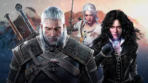

Vaidmenų Žaidimai (RPG)
Vaidmenų žaidimai (RPG) leidžia žaidėjams pasinerti į fantastinius pasaulius ir kurti savo personažus, kuriuos jie gali tobulinti žaidimo eigoje. Šie žaidimai dažnai pasižymi giliais siužetais, sudėtingomis kovos sistemomis ir daugybe pasirinkimų, kurie įtakoja žaidimo eigą. Populiariausi RPG žaidimai:
- The Witcher - epinis fantastinis žaidimas apie monstrų medžiotoją Geraltą iš Rivijos, kuriame žaidėjai keliauja per platų pasaulį, atlieka misijas ir kovoja su priešais.
- Final Fantasy - garsioji RPG serija, kurioje kiekvienas žaidimas pasakoja unikalią istoriją su skirtingais veikėjais ir pasauliais.
- Skyrim - atviro pasaulio RPG, kuriame žaidėjai gali laisvai tyrinėti Tamriel žemyną, kovoti su drakonais ir atlikti įvairias misijas.
- Mass Effect - kosminis RPG, kuriame žaidėjai keliauja per galaktiką, bendrauja su įvairiomis ateivių rasėmis ir priima svarbius sprendimus, kurie įtakoja žaidimo pabaigą.
RPG žaidimai dažnai turi ilgą žaidimo laiką ir daug turinio, kuris gali įtraukti žaidėjus mėnesiams. Jie taip pat pasižymi giliomis mechanikomis ir dažnai reikalauja strateginio mąstymo bei planavimo.